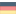

<div class="bar">
  <mat-toolbar class="clear toolbar">
    <mat-toolbar-row class="row">
      <div class="buttons">
        <div class="left">
          <button
            type="button"
            aria-label="Toggle sidenav"
            (click)="this.toggle()"
            mat-icon-button
          >
            <mat-icon aria-label="Side nav toggle icon">menu</mat-icon>
          </button>
          <span><h1>portfolio</h1></span>
        </div>
        <div class="right">
          <button
            mat-icon-button
            class="languageSwitcher"
            [matMenuTriggerFor]="menu"
          >
            <mat-icon class="languageIcon"
              ><span class="material-symbols-outlined">
                g_translate
              </span></mat-icon
            >
          </button>
          <mat-menu #menu="matMenu">
            <button mat-menu-item (click)="this.languageSwitch(this.en)">
              
              English
            </button>
            <button mat-menu-item (click)="this.languageSwitch(this.de)">
              
              German
            </button>
          </mat-menu>
        </div>
      </div>
    </mat-toolbar-row>
    <mat-toolbar-row class="row chipsRow" *ngIf="this.showChips">
      <div class="chips">
        <mat-chip-listbox aria-label="Dog selection">
          <mat-chip
            [routerLink]="['/home']"
            routerLinkActive="router-link-active"
          >
            home
          </mat-chip>
          <mat-chip
            [routerLink]="['/LSM']"
            routerLinkActive="router-link-active"
          >
            LSM
          </mat-chip>
          <mat-chip
            [routerLink]="['/Nextcloud']"
            routerLinkActive="router-link-active"
          >
            Nextcloud
          </mat-chip>
          <mat-chip
            [routerLink]="['/RPI_Clock']"
            routerLinkActive="router-link-active"
          >
            Clock
          </mat-chip>
          <mat-chip
            [routerLink]="['/ScriptRunner']"
            routerLinkActive="router-link-active"
          >
            Script Runner
          </mat-chip>
          <mat-chip
            [routerLink]="['/Runa']"
            routerLinkActive="router-link-active"
          >
            Runa
          </mat-chip>
          <mat-chip
            [routerLink]="['/AboutMe']"
            routerLinkActive="router-link-active"
          >
            About me
          </mat-chip>
        </mat-chip-listbox>
      </div>
    </mat-toolbar-row>
  </mat-toolbar>
  <mat-progress-bar
    mode="determinate"
    [value]="this.scrollService.barPosition"
    class="progessBar"
  >
  </mat-progress-bar>
</div>
